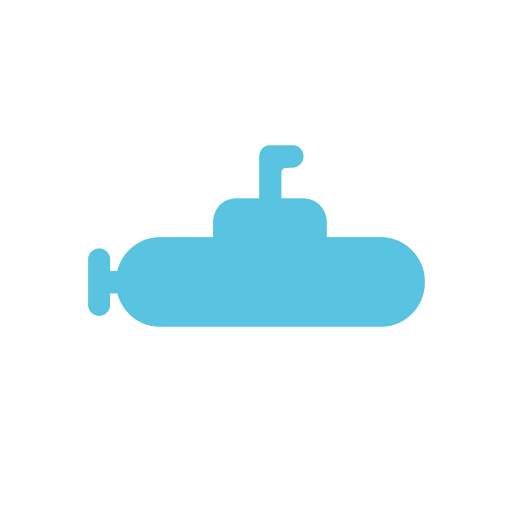
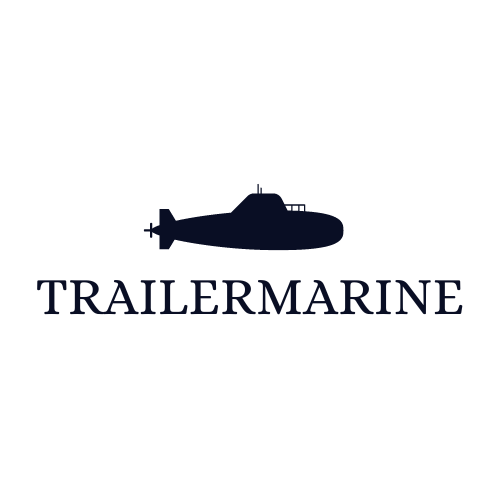

Pacotes
Pagina inicial
Cadastros
Login
Suporte
Trailermarine

Gostou dessas imagens? Agende sua viagem!
pacotes

sobre nos
Bem-vindo ao nosso site de viagens de submarino! Somos uma equipe apaixonada por explorar o fundo do mar e oferecer experiências únicas aos nossos clientes. Nossa empresa foi fundada por um grupo de entusiastas de mergulho e submarinos, que se uniram para tornar a exploração submarina mais acessível e emocionante. Desde então, crescemos para nos tornar líderes em viagens de submarino em todo o mundo. Nossa equipe é formada por especialistas em submarinos, mergulhadores e guias turísticos que possuem vasta experiência em lidar com as complexidades e desafios das viagens submarinas. Todos os nossos submarinos são cuidadosamente inspecionados e mantidos regularmente para garantir a segurança e o conforto dos nossos passageiros. Acreditamos que a exploração submarina é uma das experiências mais fascinantes e inspiradoras que se pode ter. É uma oportunidade única de descobrir o mundo oculto abaixo das ondas e de testemunhar a vida selvagem marinha em seu ambiente natural. Nós nos esforçamos para oferecer a nossos clientes a oportunidade de experimentar esses momentos inesquecíveis por meio de nossas viagens de submarino. Nosso objetivo é proporcionar aos nossos clientes uma experiência segura, confortável e enriquecedora que lhes permita apreciar e compreender melhor o mundo subaquático. Estamos comprometidos em minimizar o impacto ambiental de nossas viagens e em promover a conservação dos oceanos para as gerações futuras. Não importa se você é um mergulhador experiente ou um entusiasta do oceano, nossas viagens de submarino oferecem uma experiência emocionante e inesquecível. Explore nosso site para saber mais sobre nossos destinos e serviços, e entre em contato conosco para saber como podemos ajudá-lo a realizar sua próxima aventura subaquática.
conheça o pacote bali
pacote bali
Bem-vindo ao nosso site de viagens de submarino! Somos uma equipe apaixonada por explorar o fundo do mar e oferecer experiências únicas aos nossos clientes. Nossa empresa foi fundada por um grupo de entusiastas de mergulho e submarinos, que se uniram para tornar a exploração submarina mais acessível e emocionante. Desde então, crescemos para nos tornar líderes em viagens de submarino em todo o mundo. Nossa equipe é formada por especialistas em submarinos, mergulhadores e guias turísticos que possuem vasta experiência em lidar com as complexidades e desafios das viagens submarinas. Todos os nossos submarinos são cuidadosamente inspecionados e mantidos regularmente para garantir a segurança e o conforto dos nossos passageiros. Acreditamos que a exploração submarina é uma das experiências mais fascinantes e inspiradoras que se pode ter. É uma oportunidade única de descobrir o mundo oculto abaixo das ondas e de testemunhar a vida selvagem marinha em seu ambiente natural. Nós nos esforçamos para oferecer a nossos clientes a oportunidade de experimentar esses momentos inesquecíveis por meio de nossas viagens de submarino. Nosso objetivo é proporcionar aos nossos clientes uma experiência segura, confortável e enriquecedora que lhes permita apreciar e compreender melhor o mundo subaquático. Estamos comprometidos em minimizar o impacto ambiental de nossas viagens e em promover a conservação dos oceanos para as gerações futuras. Não importa se você é um mergulhador experiente ou um entusiasta do oceano, nossas viagens de submarino oferecem uma experiência emocionante e inesquecível. Explore nosso site para saber mais sobre nossos destinos e serviços, e entre em contato conosco para saber como podemos ajudá-lo a realizar sua próxima aventura subaquática.
puta